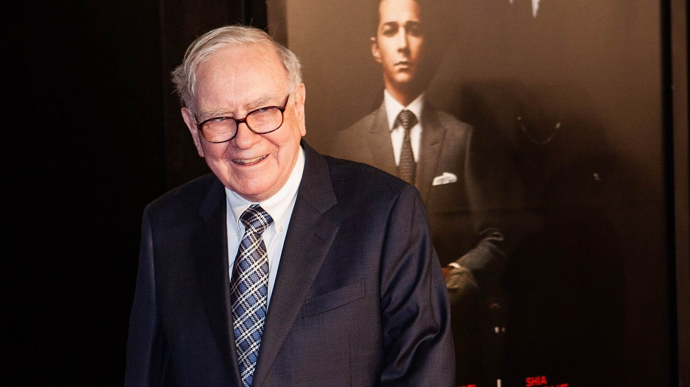

Nvidia a 12 volte gli utili senza il suo fondatore: la comprerebbe Warren Buffett?
Il titolo-simbolo dell'intelligenza artificiale ha perso il 30% in cinque settimane e tratta a circa 12 volte gli utili attesi. Berkshire Hathaway ha 377 miliardi di dollari di liquidità. Non è una previsione né un consiglio: è l'occasione per spiegare, con un caso reale, i quattro filtri con cui Warren Buffett ha sempre scelto dove investire.

In sintesi
- Nvidia −30,5% dal massimo di chiusura del 6 ottobre; vale circa 12 volte gli utili attesi (fra 11 e 13,6 a seconda della fonte).
- Berkshire Hathaway ha 377,4 miliardi di dollari di liquidità; a decidere oggi è Greg Abel, Buffett è presidente emerito.
- Il metodo Buffett in quattro filtri: capire l'azienda, vantaggio competitivo durevole, gestione capace e onesta, prezzo ragionevole.
- Il precedente: American Express nel 1963, comprata dopo uno scandalo che non aveva intaccato il servizio.
- Nvidia supera bene due filtri, non gli altri due. Nessuna fonte indica che Berkshire abbia comprato: è un esercizio di metodo, non una previsione.
Giovedì 12 novembre Nvidia ha chiuso a 166,19 dollari, il 30,5% in meno rispetto alla chiusura record di 239,24 dollari del 6 ottobre. Dopo le dimissioni del fondatore Jensen Huang il titolo tratta a circa 12 volte gli utili attesi, il livello più basso dal 2012 secondo le rilevazioni citate da Reuters. A Omaha, intanto, Berkshire Hathaway ha in cassa 377,4 miliardi di dollari. Viene spontanea una domanda da manuale: un titolo così, in un momento così, entrerebbe nel portafoglio costruito da Warren Buffett?
Il punto di partenza: un prezzo sceso, un'azienda che cresce
La caduta di Nvidia non nasce dai conti. L'ultimo trimestre pubblicato, chiuso il 26 luglio, mostra ricavi raddoppiati e margini altissimi. Il calo nasce da una notizia sulle persone: l'addio del fondatore, di cui abbiamo scritto qui, con la guida affidata ad interim alla direttrice finanziaria.
| Nvidia | Dato | Riferimento |
|---|---|---|
| Prezzo | 166,19 $ (−30,5% dal massimo di chiusura) | chiusura del 12 novembre; massimo il 6 ottobre a 239,24 $ |
| Capitalizzazione | circa 4.010 miliardi $ | 12 novembre |
| Prezzo/utili attesi | circa 12 volte | fra 11 e 13,6 secondo le fonti |
| Ricavi del trimestre | 96,2 miliardi $ (+106% in un anno) | secondo trimestre fiscale 2027 |
| Margine lordo | 75,0% | stesso trimestre |
| Utile netto | 59,7 miliardi $ | include 7,8 miliardi di plusvalenze su partecipazioni |
| Flusso di cassa libero | 21,3 miliardi $ | erano 48,6 nel trimestre precedente |
| Cassa e titoli di debito / debito | 56,6 miliardi $ / 33,4 miliardi $ | al 26 luglio 2026 |
Due numeri meritano attenzione perché sono quelli che un investitore alla Buffett guarderebbe per primi. Il flusso di cassa libero (free cash flow), cioè il denaro che resta dopo gli investimenti, si è più che dimezzato rispetto al trimestre precedente, pur restando sopra quello di un anno prima (13,5 miliardi). E il rapporto prezzo/utili (P/E): a 12 volte gli utili attesi, ogni dollaro investito «compra» circa 8,3 centesimi di utile atteso l'anno (1 diviso 12). È il rendimento degli utili (earnings yield), che Buffett confronta da sempre con i titoli di Stato: oggi il Treasury a 10 anni rende circa il 5,1%. Attenzione però: gli utili attesi sono stime, non certezze.
💡 Impara: che cos'è il margine di sicurezza
Il margine di sicurezza (margin of safety) è l'idea centrale dell'investimento di valore: comprare solo quando il prezzo è nettamente sotto il valore intrinseco (intrinsic value), cioè la stima di quanto l'azienda vale per il denaro che produrrà nel tempo. La differenza è il cuscinetto contro gli errori di valutazione e la sfortuna. Più il futuro di un'azienda è incerto, più il cuscinetto deve essere ampio.
Il precedente: American Express e lo scandalo dell'olio d'insalata
Il caso che più somiglia a quello di oggi ha più di sessant'anni. Nel 1963 American Express fu travolta dalla frode di un commerciante di oli vegetali, che aveva ottenuto prestiti dando in garanzia cisterne in gran parte vuote. Il titolo scese da 65 dollari di ottobre 1963 a 37 dollari nel gennaio 1964. Buffett, allora poco più che trentenne, si fece una domanda diversa da quella del mercato: lo scandalo aveva cambiato l'abitudine delle persone di usare la carta e gli assegni turistici? Verificò di persona che i clienti continuavano a usarli, e investì. Le ricostruzioni indicano una quota di circa il 5% della società, per una somma fra 13 e 20 milioni di dollari a seconda delle fonti. American Express è ancora oggi una delle prime posizioni di Berkshire.
La lezione non è «compra dopo gli scandali». È distinguere fra un danno alla reputazione o ai vertici e un danno al motore dell'azienda: clienti, prodotto, capacità di generare denaro. Nel primo caso il prezzo può scendere più del valore; nel secondo, il prezzo basso è giustificato.
I quattro filtri di Buffett, applicati a Nvidia
Nelle lettere agli azionisti Buffett ha descritto più volte che cosa cerca: un'attività che capisce, con prospettive favorevoli nel lungo periodo, guidata da persone capaci e oneste, disponibile a un prezzo sensato. Proviamo ad applicarli, mettendo accanto gli argomenti a favore e i dubbi.
| Filtro | La domanda | A favore | I dubbi |
|---|---|---|---|
| 1. Capire l'azienda | So come guadagnerà fra dieci anni? | Il modello è chiaro oggi: vende i chip per l'AI ai grandi centri dati | Tecnologia che cambia in fretta; Buffett ha sempre evitato ciò che non sa prevedere |
| 2. Vantaggio competitivo | I concorrenti possono erodere i margini? | Margine lordo del 75%, ricavi dei centri dati +117% in un anno | I grandi clienti progettano chip propri; la produzione dipende da Taiwan |
| 3. Gestione | Chi guida è capace e affidabile? | Continuità interna con la direttrice finanziaria, in azienda dal 2013 | Fondatore uscito, successore da trovare, accertamenti in corso |
| 4. Prezzo | Pago meno di quanto vale? | Circa 12 volte gli utili attesi, minimo dal 2012 | Gli utili dei chip sono ciclici: un P/E basso può nascondere utili al picco |
Primo filtro. Buffett lo chiama cerchio di competenza. Per decenni ha tenuto fuori la tecnologia; ha iniziato a comprare Apple solo nel 2016. E quando nel 2022 Berkshire acquistò circa 4,1 miliardi di dollari di TSMC, il gruppo taiwanese che fabbrica i chip progettati da Nvidia, la vendette nel giro di pochi mesi. Buffett definì TSMC una delle società meglio gestite al mondo, ma spiegò: «I don't like its location» (non mi piace dove si trova). È un precedente che pesa: il rischio geopolitico su Taiwan riguarda anche Nvidia, le cui previsioni per il trimestre in corso non includono ricavi dai chip per centri dati in Cina.
Secondo filtro. È quello che Nvidia supera meglio. Un margine lordo del 75% su quasi 100 miliardi di ricavi trimestrali significa che i clienti pagano molto più del costo di produzione, e continuano a farlo: è il segno di un fossato. Il dubbio è la durata. Fra i concorrenti potenziali ci sono gli stessi clienti, che sviluppano chip propri; uno di questi è Alphabet, di cui Berkshire è diventata grande azionista.
Terzo filtro. È quello che oggi non passa, ed è il motivo del crollo. Il fondatore è uscito, la guida è provvisoria e, secondo Evercore, non c'è un piano di successione evidente. A Buffett è attribuita una battuta: meglio comprare aziende così buone che anche un incapace potrebbe guidarle, perché prima o poi succederà. La domanda diventa allora: quanto del vantaggio di Nvidia stava nell'azienda e quanto nella persona? È il rischio da persona chiave (key-man risk), e nessuno oggi ha la risposta.
Quarto filtro. Dodici volte gli utili sembrano poche per un'azienda che raddoppia i ricavi. Ma nei semiconduttori gli utili salgono e scendono con i cicli di investimento: se la spesa per i centri dati rallentasse, gli utili scenderebbero e quel 12 diventerebbe un numero più alto. Gli analisti sono divisi: Bernstein giudica i fondamentali solidi ma ha dimezzato il prezzo obiettivo da 400 a 200 dollari; Evercore lo ha portato da 465 a 186; Citi conferma il giudizio positivo con obiettivo a 225.
💡 Impara: fossato economico e cerchio di competenza
Il fossato economico (economic moat) è il vantaggio che protegge i profitti di un'azienda dai concorrenti, come il fossato proteggeva un castello: un marchio, una tecnologia, costi più bassi, clienti che faticano a cambiare fornitore. Il cerchio di competenza (circle of competence) è l'insieme delle attività che un investitore capisce davvero. Per Buffett non conta quanto è grande il cerchio, ma conoscerne i confini e non uscirne.
Che cosa c'è nella cassaforte di Berkshire
Prima un chiarimento: oggi le decisioni non le prende più Buffett. Dal 1° gennaio 2026 l'amministratore delegato è Greg Abel; il 18 settembre Buffett, 96 anni, ha lasciato anche la presidenza al figlio Howard ed è presidente emerito. «Che cosa farebbe Buffett» è quindi una domanda sul metodo; che cosa farà Berkshire dipende da Abel.
| Berkshire Hathaway | Dato | Riferimento |
|---|---|---|
| Liquidità | 377,4 miliardi $ | 30 settembre 2026 (352,3 al netto di ferrovie, energia e titoli da regolare) |
| Riacquisti di azioni proprie | 9,6 miliardi $ nel trimestre | record per un trimestre; circa 14,4 da inizio anno |
| Portafoglio azionario dichiarato | circa 299 miliardi $ in 29 posizioni | 30 giugno 2026 |
| Prime cinque posizioni | Apple, American Express, Alphabet, Coca-Cola, Bank of America | invariate nel terzo trimestre |
| Alphabet | circa 37,8 miliardi $ | 30 giugno; posizione più che triplicata nel primo trimestre |
Tre indizi sul modo di ragionare di Abel. Il primo: ha portato Alphabet fra le prime posizioni, quindi l'intelligenza artificiale non è fuori dal perimetro. Il secondo: nel terzo trimestre ha preferito ricomprare azioni Berkshire per 9,6 miliardi, spiegando che lo fa quando il titolo tratta sotto una stima prudente del valore intrinseco. Il terzo: la liquidità resta enorme, segno che non ha trovato molte occasioni a prezzi che ritiene sensati. Le azioni Berkshire di classe B, peraltro, hanno chiuso il 12 novembre a 589,83 dollari, vicino al massimo delle ultime 52 settimane.
Tre ipotesi, solo per capire le proporzioni
Quanto sarebbe grande un eventuale acquisto? È un esercizio aritmetico, non una previsione: mettiamo accanto tre importi e li confrontiamo con le dimensioni di Nvidia e della cassa di Berkshire.
| Ipotesi | Importo | Quota di Nvidia | Quota della liquidità di Berkshire |
|---|---|---|---|
| Una posizione di prova | 5 miliardi $ | 0,12% | 1,3% |
| Quanto Alphabet a giugno | 37,8 miliardi $ | 0,94% | 10,0% |
| Quanto Apple a giugno | 66,0 miliardi $ | 1,64% | 17,5% |
I calcoli: importo diviso 4.010 miliardi di capitalizzazione e diviso 377,4 miliardi di liquidità. Il risultato dice una cosa semplice: Berkshire potrebbe comprare una posizione grande quanto quella in Apple usando meno di un quinto della cassa, e avrebbe comunque meno del 2% di Nvidia. Il limite, per un gruppo così, non sono i soldi: sono i quattro filtri.
💡 Impara: che cos'è la trappola del valore
La trappola del valore (value trap) è un titolo che sembra a buon mercato, perché ha un rapporto prezzo/utili basso, ma lo è per una buona ragione: gli utili stanno per scendere. Succede spesso nei settori ciclici, come i semiconduttori, dove il P/E è più basso proprio quando gli utili sono al massimo del ciclo. Per questo un numero basso, da solo, non è un margine di sicurezza.
Che cosa sappiamo e che cosa guardare
Nessuna fonte indica che Berkshire abbia comprato Nvidia e, secondo la stampa specializzata, il gruppo non ha mai dichiarato una posizione nel titolo. Nei mesi scorsi alcuni commentatori americani avevano ipotizzato un ingresso dopo quello in Alphabet; altri prevedevano che la cassa sarebbe andata prima ai riacquisti. Sono opinioni.
Tre date aiutano a seguire la vicenda. Entro lunedì 16 novembre Berkshire deposita il modulo trimestrale sulle partecipazioni: fotografa però il portafoglio al 30 settembre, cioè prima del crollo. Un eventuale acquisto di queste settimane si vedrebbe solo nel modulo successivo, a febbraio. Martedì 17 novembre Nvidia pubblica i conti del trimestre, con ricavi attesi dall'azienda a 108 miliardi di dollari: è lì che si capirà se il motore gira ancora come prima. Poi c'è la scelta del successore, che riguarda proprio il terzo filtro.
💡 Impara: che cos'è il modulo 13F
Negli Stati Uniti i grandi investitori devono dichiarare alla SEC, ogni trimestre, le azioni americane che possiedono con un documento chiamato Form 13F (modulo delle partecipazioni). Va depositato entro 45 giorni dalla fine del trimestre: racconta quindi il passato, non il presente. È utile per capire come ragiona un investitore; non lo è per copiarne le mosse, perché nel frattempo i prezzi sono cambiati.
Nota metodologica: prezzi di Nvidia e Berkshire da Yahoo Finance (chiusure del 12 novembre e del 6 ottobre 2026); il rapporto prezzo/utili attesi è indicato fra 11 e 13,6 da fonti diverse (Reuters, Benzinga, Motley Fool su dati Yahoo). I conti di Nvidia sono quelli del comunicato sul secondo trimestre fiscale 2027; quelli di Berkshire Hathaway vengono dai risultati del terzo trimestre 2026 riportati da CNBC. La composizione del portafoglio al 30 giugno 2026 è ricavata da elaborazioni di terzi sul modulo 13F e può contenere approssimazioni. Le cifre sull'investimento in American Express del 1963-64 variano fra le ricostruzioni storiche. I giudizi degli analisti sono quelli riportati da CNBC. Le tre ipotesi di importo sono un esercizio aritmetico e non una previsione: questo articolo ha finalità informative ed educative, non descrive un'operazione in corso e non costituisce consulenza finanziaria né un invito ad acquistare o vendere titoli.